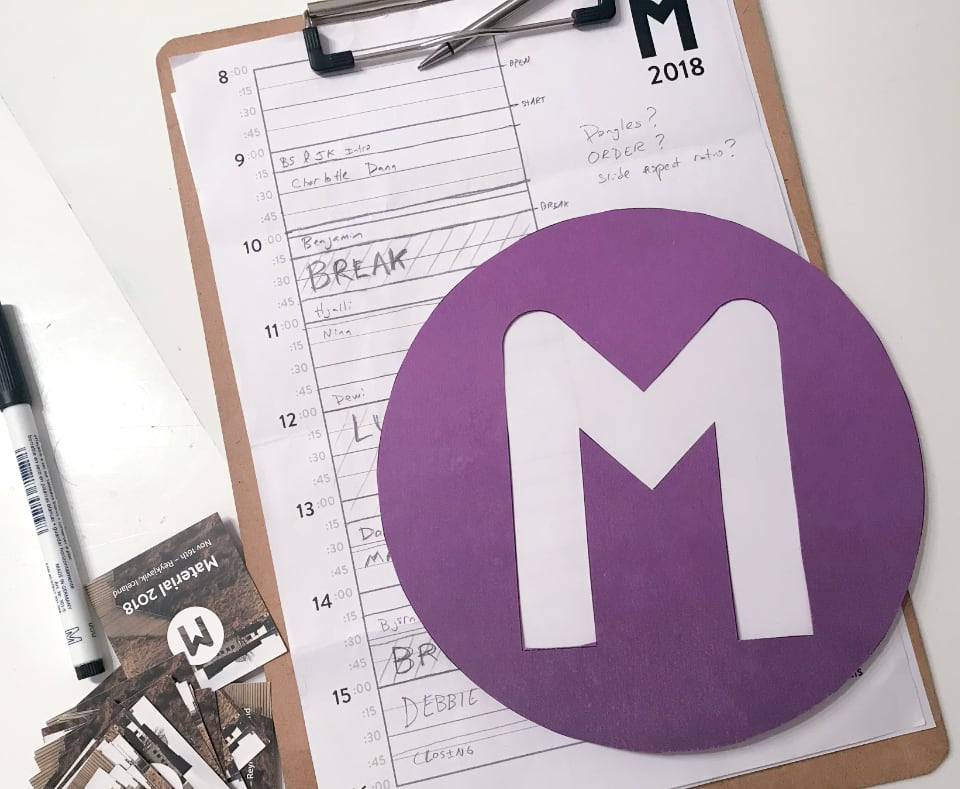

<!DOCTYPE html PUBLIC "-//W3C//DTD XHTML 1.0 Transitional//EN" "http://www.w3.org/TR/xhtml1/DTD/xhtml1-transitional.dtd">
<html xmlns="http://www.w3.org/1999/xhtml" lang="en-US">

<head profile="http://gmpg.org/xfn/11">
<meta http-equiv="Content-Type" content="text/html; charset=UTF-8" />

<title>Material: 2018 Synopses &laquo;  optional.is/required</title>

<link rel="stylesheet" href="https://optional.is/required/wp-content/themes/optional/style.css" type="text/css" media="all" />
<link rel="alternate" type="application/atom+xml" title="optional.is/required Atom Feed" href="http://feeds2.feedburner.com/optional?format=xml" />
<link rel="pingback" href="https://optional.is/required/xmlrpc.php" />
<link rel="EditURI" type="application/rsd+xml" title="RSD" href="http://example.com/xmlrpc.php?rsd" />
<link rel="wlwmanifest" type="application/wlwmanifest+xml" href="../../../../wp-includes/wlwmanifest.xml" />
<link rel="apple-touch-icon-precomposed" href="../../../../../images/apple-touch-icon-precomposed.png"/>
<meta name="viewport" content="width=device-width, initial-scale=1, maximum-scale=1" />
<meta name="twitter:card" content="summary">
<meta name="twitter:site" content="@optionalBot">
<meta name="twitter:title" content="Material: 2018 Synopses">
<meta name="twitter:description" content="This was our second event. Taking what we learnt from the first one and iterating, we're creating something more and more unique and special.">
<meta name="twitter:creator" content="@optionalBot">
<meta name="twitter:domain" content="http://optional.is">
</head>
<body>
<div id="header">
<h1><a href="../../../../index.html">(optional.is)</a></h1>
</div>
			
		<div class="post-4600 post type-post status-publish format-standard hentry category-material tag-1345 tag-conference tag-material tag-material-conference tag-material-is tag-synopses" id="post-4600">
			<h2 style="border-bottom: 2px solid #954347">Material: 2018 Synopses</h2>

			<div class="entry">
<div class="time"><abbr title="2020-03-11T11:11:30+00:00">Wednesday, March 11th, 02020 at 11:11 UTC</abbr></div>
				
<figure class="banner"></figure>


<p><a href="https://material.is/2018/">Material 02018</a> was our second event. <a href="../../../../2019/12/10/material-2017-synopses/index.html">The previous year</a>, we hosted the event in August, right around Culture Night and the Marathon. We thought coming to Iceland could be part of something bigger. It turned out, that it was just more chaotic, so in 02018, we pushed the event back a few months to November. It was quieter, but dark. We pitched this as a good opportunity to come and see the Northern Lights. It turned out, the day after the conference was a storm and all the flights were delayed or cancelled. But we can&#8217;t be held responsible for that!</p>


<p>The day itself was a success. We continued to build on the 02017 event with more speakers discussing everything from waste products to material science. The attendance increased and we continued to draw people in from abroad.</p>


<p>We still struggled with how to explain the event and find our audience. This is a strange type of conference in that you won&#8217;t learn X. Trying to take the day off work and explain to your boss why this is important is difficult to justify.</p>


<h2>Because…</h2>


<p>Joschi and Brian both felt that we weren&#8217;t done. The first conference only scratched the surface of possibilities of the Web. We examined, only briefly, what the Web as a material could be made from and what affordances we could glean from it. With only 9 speakers, there was no way we could have explored all the different possibilities.</p>


<p>So we decided to have second event. We got smarter about the budgets, timing and streamlined what worked and skipped what didn&#8217;t.</p>


<p>As with the previous year, we have a list of speakers we&#8217;d love to hear from. Both dream speakers, unknown speakers, friends and other interesting folks. While we&#8217;d love to invite them all, it is just impossible todo. Budgets, timing, themes and space all limit our choices. So we started to work our way through the list, slowing inviting people, seeing who is available and then continuing to pair them-up with others to try and keep a running theme for the day.</p>


<p>This year, we went back to one of our 02016 potential speakers, Matt Jones. He made it over to our event and didn&#8217;t disappoint. We also got Nina Walia who talked about computing interfaces via textiles. Debbie Chachra, who is an actual material scientist, wow&#8217;ed us with some hands on examples. The whole day was amazing and we managed to cover a lot of ground, which is exactly what we wanted todo.</p>


<p>This was our second year, so we only have two data points. It is a difficult balance to get right, but we are trying to be creative and imaginative about the Web, without being too impractical. At the same time, we don&#8217;t want too be super practical, because with technology, in six months, that knowledge might be passé.</p>


<p>Our goal is to inspire. If at least one person who has attended Material goes away and starts a new company or creates a new product based on what they heard at the event, then we&#8217;ll have been successful. It is a lofty goal, but one I think we can achieve. If we keep putting intelligent, inspiring speakers in front of our talented audience, it is only a matter of time until those sparks start a fire.</p>


<h2>Conference&nbsp;<strong>➞</strong>&nbsp;Web</h2>


<p>We increased our attendance from last year to <strong>77 attendees</strong> from <strong>9 different countries</strong> &#x1f1f3;&#x1f1f1;&#x1f1e9;&#x1f1ea;&#x1f1fa;&#x1f1f8;&#x1f1ec;&#x1f1e7;&#x1f1f8;&#x1f1ea;&#x1f1e8;&#x1f1e6;&#x1f1ee;&#x1f1ea;&#x1f1ee;&#x1f1f8;, <strong>9 live streaming tickets</strong> and <strong>9 excellent speakers.</strong> The split between local and international was around 40% Icelanders and 60% abroad. We are very happy with being able to share Iceland, no matter the weather, with everyone coming to visit.</p>


<p>We recorded all the sessions which are all available on the&nbsp;<a href="https://material.is/archive/">archive site</a>, but we also added them here along with a synopsis of why we thought this was an important topic and what we learnt along the way.</p>


<ul><li><a href="../../../01/08/material-craft-on-the-web-charlotte-dann/index.html">Craft on the Web – Charlotte Dann</a></li><li><a href="../../../01/15/material-worldmapper-benjamin-hennig/index.html">Worldmapper – Benjamin Hennig</a></li><li><a href="../../../01/22/material-grid-spreadsheets-run-the-world-hjalmar-gislason/index.html">GRID Spreadsheets run the world – Hjalmar Gislason</a></li><li><a href="../../../01/29/material-responsive-clothing-nina-walia/index.html">Responsive Clothing – Nina Walia</a></li><li><a href="../../../02/05/material-bailer-dewi-gywn-uridge/index.html">Bailer – Dewi Gywn Uridge</a></li><li><a href="../../../02/12/material-being-an-inter-multi-disciplinary-creative-dan-rubin/index.html">Being an Inter-multi-disciplinary Creative – Dan Rubin</a></li><li><a href="../../../02/19/material-misanthropic-principals-matt-jones/index.html">Misanthropic Principals – Matt Jones</a></li><li><a href="../../../02/26/material-catch-of-the-day-bjorn-steinar/index.html">Catch of the Day – Björn Steinar</a></li><li><a href="../../04/material-hierarchies-and-systems-some-futures-for-material-debbie-chachra/index.html">Hierarchies and Systems: Some Futures for Material – Debbie Chachra</a></li></ul>


<p>Material is a conference exploring the concept of the Web as a material. We tried to reflect that with our speakers and their background. We also trying to make the day interactive with physical objects. This year was no different, Charlotte brought along some of her plastic and metal jewellery, Nina brought and demo&#8217;ed one of the Jacquard woven denim jackets, Matt has some of the AI Cameras, Björn was a hit with his Vodka and Debbie had some hands on activities. </p>


<p>These tactile interactions help illustrate and explain products and processes. With a little bit of imagination, we can begin to see how the Web is fundamental to these products or how these products can be reimagined in the light of the Web and digital.</p>


<p>Each year, we draw from nature for the branding. In 02016, when we started the 16th element of the periodic table is Sulphur. Therefore, we want with a strong yellow for the logo. 02017 was blue-green since the 17th element is Chlorine. 02018 was purple for Argon, 02020 is more of a muted brown/grey for Calcium and 02021 will be grey/yellow for Scandium. We tried to tie how and why each of these elements is interesting in Icelandic context.</p>


<h2>Speakers</h2>


<p>With each year, we are building-up an alumni network of speakers. Everyone likes to talk about how they saw that band before they were big, well, that&#8217;s us too. We&#8217;re proud to bring some speakers who might not be as polished or far along in their career as some TED talk style presentations, but that&#8217;s OK. Everyone has to start somewhere, and sometimes, people who are super new or just starting are much more relatable that a 30 year veteran with a massive staff and resources. Great inspiration can come from your peers. </p>


<p>It is great to see several of our 02017 and 02018 speakers go on to speak at other events and their profiles grow. We&#8217;d like to thing it was us who gave them their first big chance, but in reality, it is their amazing ideas and talents which allow them to be in demand. If we can help, then part of the goal of our conference was achieved.</p>


<h2>The Venue</h2>


<p>We continued to use the same venue, <a href="https://nordichouse.is">Nordic House</a>. It is in a great location and the facilities for hosting and recording are amazing. We&#8217;ve been very happy and will continue to use them until we out-grow the room.</p>


<p>One big difference between 02017 and 02018 event was our size. During our first year, all the attendees could sit together and enjoy lunch around the tables and chat in the restaurant. In 02018, that was different. We had out grown the space and had to switch to a buffet style lunch. We lost that lovely lunch-time feel and interaction. Eating standing in the foyer is certainly a different experience. It is one that we&#8217;d like to look into for the future.</p>


<p>If we continue to grow, we&#8217;ll have to jump to a larger venue. We&#8217;re not sure we are there yet, or when we will be. Nordic House is a great venue and has a lot of things built-in. The Audio/Video setup is amazing and inexpensive. If we moved to a different venue, then we have different things to consider.</p>


<h2>The Future</h2>


<p>Running a conference is a lot of hard, unpaid, under appreciated work. With all the time and effort we put into these events, they are in no way a money-maker, but that&#8217;s not why we do it.</p>


<p>We want to feature amazing speakers, bring new ideas to Iceland, bring attendees to Iceland, nurture young talent and showcase amazing local companies. Over time, the archive will become and even more valuable resource. Our goal for the next year is to build better website for the past sessions, the transcripts, videos, synopses and more.</p>


<p>We are continuing with Material on March 20th, 2020. We are still hunting around for the right time of year. There is a lot happening in March in Iceland. This could be a good or bad thing. There&#8217;s only one way to find out and that&#8217;s to keep trying.</p>


<p style="text-align: center"><strong>Thank you everyone who attended and supported us!</strong></p>


<div class="banner"></div>


<p>You can view all the video recordings and subscribe to the Material podcast on the&nbsp;<a href="https://material.is/archive/">Material Archive site</a>.</p>

              <div class="postmetadata">
					<p><strong>Categories:</strong> <a href="../../../../category/material/index.html" title="View all articles in Material" rel="tag category" style="background-color: #f4f4f4; text-decoration: none; border-bottom: 2px solid #d92a83">Material</a></p><p><strong>Tags:</strong> <a href="../../../../tag/2018/index.html" rel="tag" style="background-color: #f4f4f4; text-decoration: none; border-bottom: 2px solid #84ddfb">2018</a>, <a href="../../../../tag/conference/index.html" rel="tag" style="background-color: #f4f4f4; text-decoration: none; border-bottom: 2px solid #ab3049">conference</a>, <a href="../../../../tag/material/index.html" rel="tag" style="background-color: #f4f4f4; text-decoration: none; border-bottom: 2px solid #eec34d">material</a>, <a href="../../../../tag/material-conference/index.html" rel="tag" style="background-color: #f4f4f4; text-decoration: none; border-bottom: 2px solid #bc5b2b">material conference</a>, <a href="../../../../tag/material-is/index.html" rel="tag" style="background-color: #f4f4f4; text-decoration: none; border-bottom: 2px solid #8c0d9f">material.is</a>, <a href="../../../../tag/synopses/index.html" rel="tag" style="background-color: #f4f4f4; text-decoration: none; border-bottom: 2px solid #35e5f9">Synopses</a></p>			  </div>
			
		<div class="navigation">
			<div class="prev"><div class="time">04 March 02020</div><a href="../../04/material-hierarchies-and-systems-some-futures-for-material-debbie-chachra/index.html" style="background-color: #f4f4f4; text-decoration: none; border-bottom: 2px solid #706b96">&laquo; Material: Hierarchies and Systems: Some Futures for Material - Debbie Chachra</a></div>
			<div class="next"></div>
		</div>

			</div>
			<!-- call out footer -->
			<div class="callout-footer" style="padding-top: 1em; border-top: 2px solid #954347; border-bottom: 2px solid #954347; font-size: 120%">
			<p>You've been reading optional.is/required/ a blog about technology, culture, paper and other interesting topics, since 02009. The easiest way to stay current is to grab the <a href="http://feeds2.feedburner.com/optional?format=xml">RSS Feed</a>.</p>

			<p><a href="../../../../../newsletter/index.html">Subscribe to the quarterly mailing list</a> to receive interesting stories, links and updates.</p>
			</div>
		</div>

	
<!-- You can start editing here. -->


			<!-- If comments are closed. -->
		<!-- <p class="nocomments">Comments are closed.</p> -->

	


	

<div id="footer" class="vcard">
  <div>
  <div style="float: left; font-size: 16px;">
<form method="get" id="searchform" action="http://optional.is/required/" >
<div><input type="text" value="" name="s" id="s" /><input type="submit" id="searchsubmit" value="Search" /></div>
</form>
Copyright 2009 - <a href="http://suda.co.uk/">Brian Suda</a>
</div> 
<a href="../../../../../index.html" class="url fn org" style="float:right; display: block;">(optional.is)</a>
  </div>
</div>
<script type="text/javascript">var gaJsHost = (("https:" == document.location.protocol) ? "https://ssl." : "http://www."); document.write(unescape("%3Cscript src='" + gaJsHost + "google-analytics.com/ga.js' type='text/javascript'%3E%3C/script%3E"));</script>
<script type="text/javascript">try { var pageTracker = _gat._getTracker("UA-2497164-9"); pageTracker._trackPageview(); } catch(err) {}</script>

</body>
</html>
